Kachel: bestanden, Kern 2
abgelegtes Bild: bestanden, 6 Punkte, Kern 1 Marias Hinweis auf den fehlenden Wein wird vermutet, aber Jesu Antwort und der genaue Gesprächsmoment sind nicht erkennbar.
Blind: The woman gestures toward the man as they face one another across a table. Three indistinct figures are gathered around another table in the background. – Possibly the wedding at Cana, at the moment when Mary tells Jesus that the wine has run out. The image alone does not establish the story or exact moment.
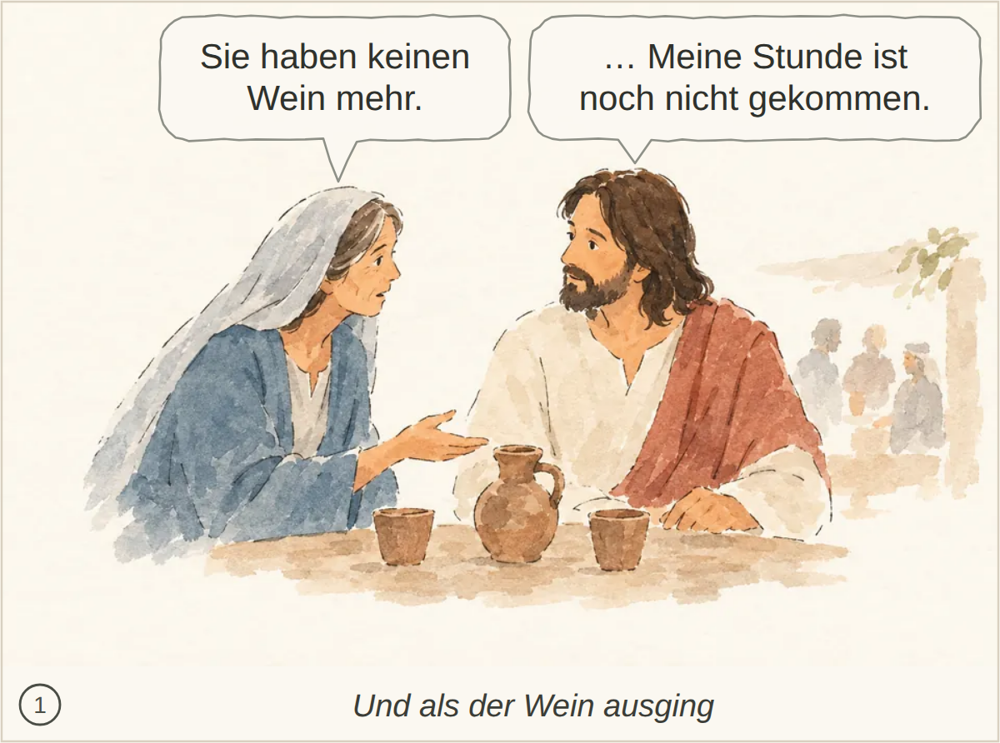
Kachel: bestanden, Kern 2
abgelegtes Bild: bestanden, 8 Punkte, Kern 2 Nichts Wesentliches.
Blind: An older man holds a cup and gestures toward a man wearing a flower wreath, who listens with his hands clasped. The other people stand nearby and look toward the exchange. – Possibly the wedding at Cana: the moment when the master of the banquet, having tasted the wine, speaks to the bridegroom. The image alone does not establish the story with certainty.
Kachel: bestanden, Kern 2
abgelegtes Bild: bestanden, 7 Punkte, Kern 2 Der genaue Ausspruch Jesu wird nicht erwähnt.
Blind: A man raises a cord whip while overturning a table, scattering coins. Two men recoil beside cages of birds as livestock move away and a crowd stands in the background. – This likely depicts Jesus cleansing the Temple, at the moment he overturns a money changer's table and drives out sellers and animals.
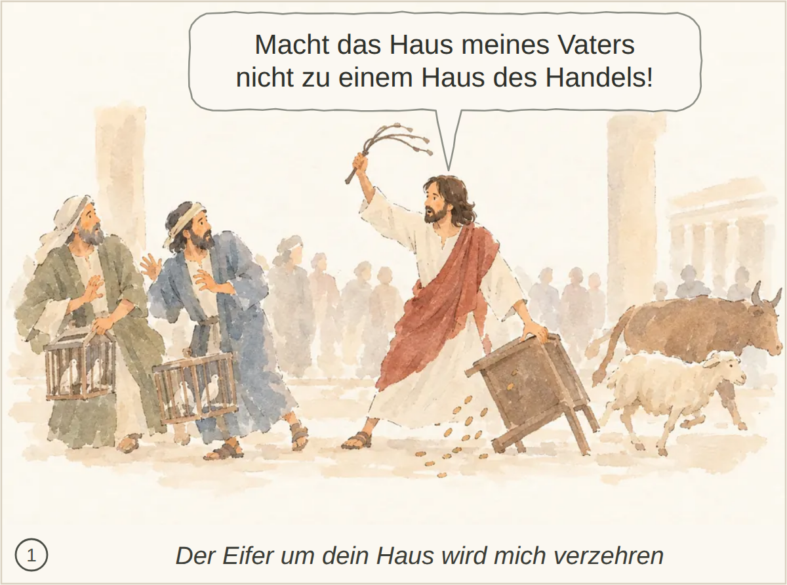
Kachel: bestanden, Kern 2
abgelegtes Bild: bestanden, 6 Punkte, Kern 1 Die Frage nach einem Zeichen und Jesu Aussage über den Tempel seines Leibes und seine Auferstehung sind nicht erkennbar.
Blind: Three men face a man in a red drape, and one of them gestures toward him. The man in red holds a hand to his chest as they appear to converse. – The man in red may represent Jesus speaking with religious leaders near the temple, but the image does not identify a particular Bible story or exact moment.
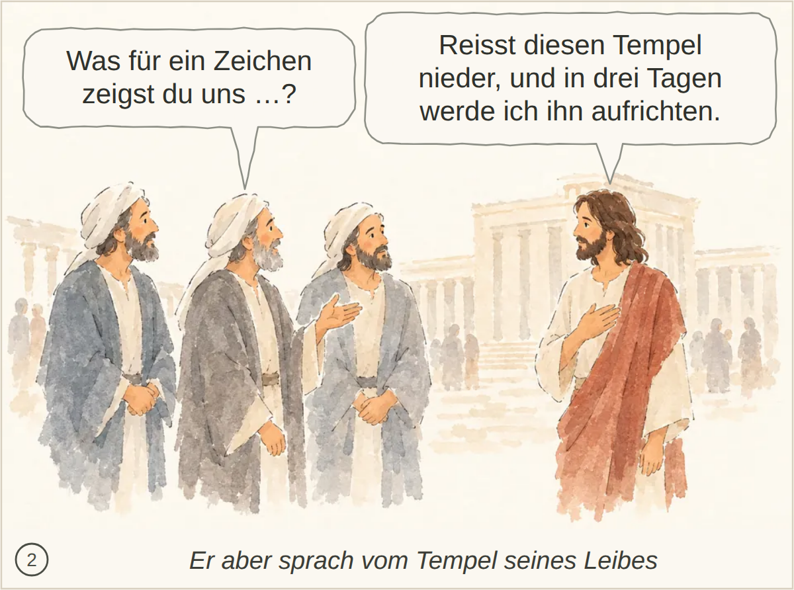
Kachel: bestanden, Kern 2 Nichts Wesentliches; die spätere Erinnerung und der Glaube der Jünger sind nicht dargestellt.
abgelegtes Bild: durchgefallen, 5 Punkte, Kern 1 Der Glaube aufgrund der Zeichen sowie Jesu fehlendes Vertrauen und seine Kenntnis der Menschen bleiben unklar.
Blind: Several people on the left lean and gesture toward the robed man on the right. He turns his head back toward them, while smaller figures appear in the distance. – The robed man may be Jesus addressing or being approached by followers, but the picture does not identify a particular Bible story or exact moment.

Kachel: bestanden, Kern 1 Der Glaube aufgrund der Zeichen sowie Jesu Zurückhaltung und seine Kenntnis des menschlichen Inneren sind nicht erkennbar.
abgelegtes Bild: bestanden, 5 Punkte, Kern 1 Das Schöpfen und Bringen zum Speisemeister sowie Marias Aufforderung zum Gehorsam werden nicht erkennbar.
Blind: Two workers pour water from pitchers into large jars while two others hold pitchers. A woman gestures toward the workers, and a bearded man in a red-brown drape gestures toward the group. – Probably the wedding at Cana: the moment when, at Jesus' direction, servants fill six stone jars with water before it is turned into wine.
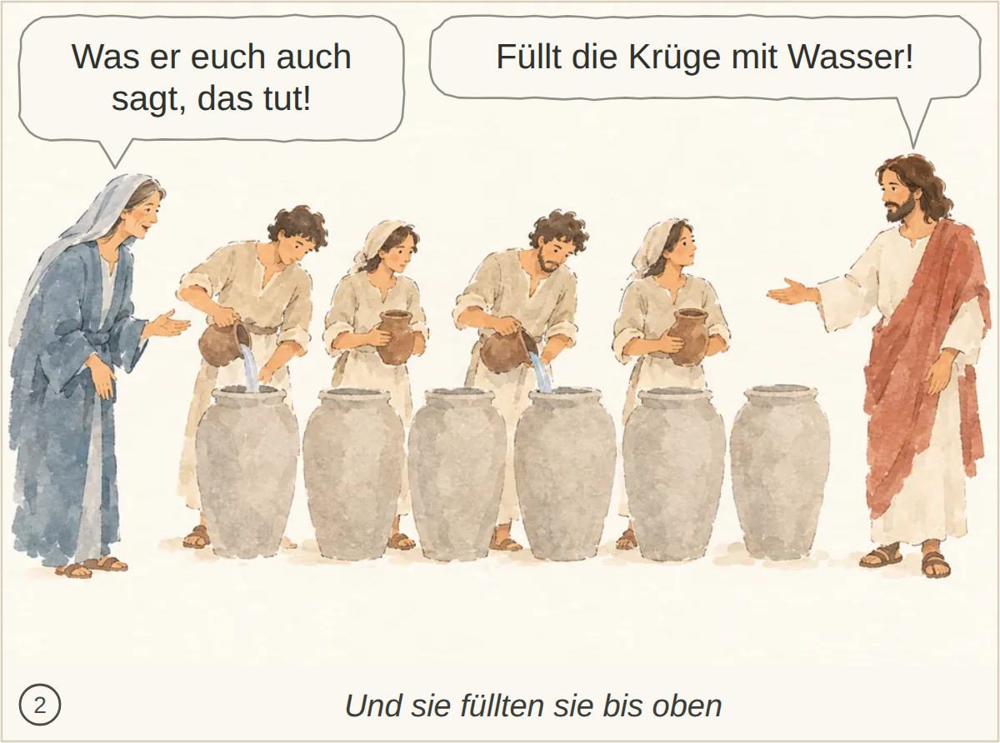
Kachel: bestanden, Kern 1 Marias Aufforderung, Jesus zu gehorchen, sowie Jesu Auftrag, zu schöpfen und es dem Speisemeister zu bringen, fehlen.
abgelegtes Bild: bestanden, 5 Punkte, Kern 1 Passa in Jerusalem, die Zeichen und der daraus erwachsende Glaube sowie Jesu Zurückhaltung gegenüber den Menschen sind nicht erkennbar.
Blind: A group stands together on the left, looking toward a robed man standing apart on the right. One man points toward him, while he looks back at the group. – The man on the right may represent Jesus with a group of followers, but no particular Bible story or exact moment can be identified confidently from the picture alone.

Kachel: bestanden, Kern 1 Die Zeichen als Grund des Glaubens und Jesu Wissen um das Innere der Menschen werden nicht gezeigt; auch das Passafest bleibt unklar.
abgelegtes Bild: bestanden, 6 Punkte, Kern 2 Heck und Kissen werden nicht ausdrücklich erwähnt.
Blind: The boat is surrounded by rough, breaking waves. Four men look concerned while one reaches toward a fifth man, who lies with his eyes closed. – Likely Jesus calming the storm, specifically the moment when the disciples approach or wake him as he sleeps in the boat.

Kachel: bestanden, Kern 2
abgelegtes Bild: bestanden, 7 Punkte, Kern 2 Nichts Wesentliches fehlt.
Blind: Three men are in a boat on the water. The standing man extends an arm over the water while the other two lean forward and watch him. – Possibly Jesus calming the storm, at the moment he stretches out his arm to command the wind and waves to be still.

Kachel: bestanden, Kern 2
abgelegtes Bild: bestanden, 4 Punkte, Kern 1 Die Reue des Sohnes und sein Entschluss, zum Vater zurückzukehren und seine Schuld zu bekennen, werden nicht deutlich.
Blind: A seated man looks upward while three pigs eat from a trough beside him. He appears weary or troubled. – Possibly the parable of the prodigal son, at the moment when he is tending pigs and longing to eat their food.
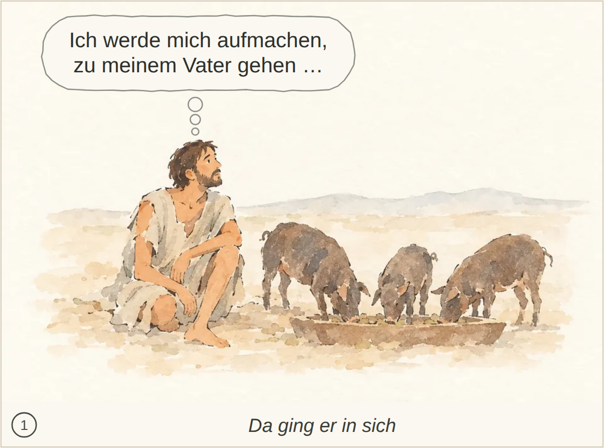
Kachel: bestanden, Kern 2 Das verschleuderte Erbe und das konkrete Schuldbekenntnis werden nicht erwähnt.
abgelegtes Bild: bestanden, 6 Punkte, Kern 2 Kuss, Schuldbekenntnis und Anweisungen zu Ring, Sandalen und Mastkalb werden nicht beschrieben.
Blind: The older man holds the younger man by the shoulders as the younger man bows his head. In the distance, another figure carries a piece of cloth near the building. – Possibly the return of the prodigal son, at the moment his father welcomes and embraces him.
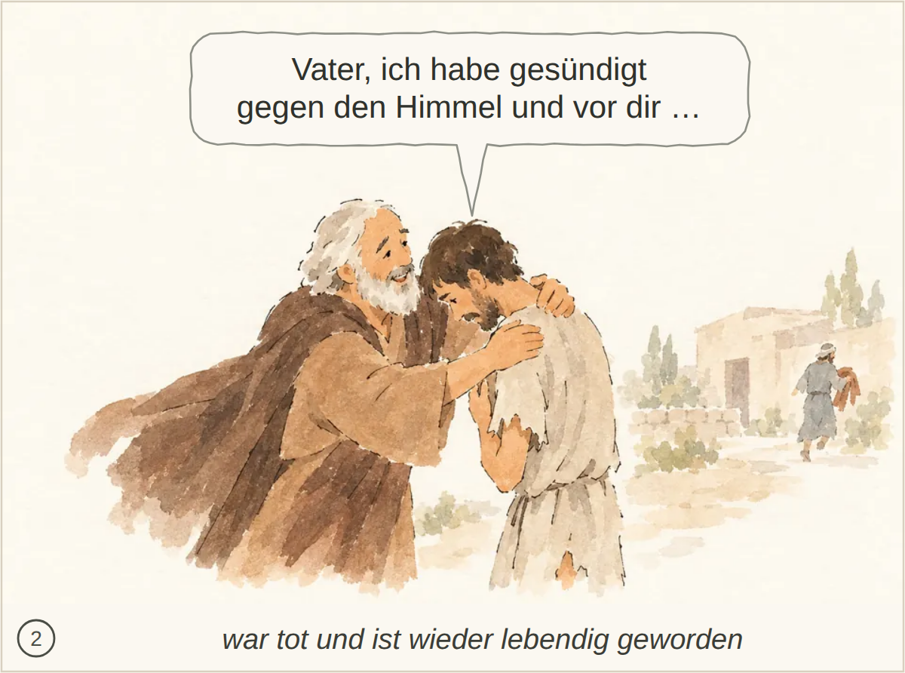
Kachel: bestanden, Kern 2 Kuss, Herbeilaufen und die Anordnungen zu Gewand, Ring, Sandalen und Mastkalb fehlen; auch der Ausspruch des Vaters wird nicht erwähnt.
abgelegtes Bild: bestanden, 5 Punkte, Kern 2 Nichts Wesentliches; der genaue Wortlaut ist nicht erkennbar.
Blind: An older man touches the arm of a younger man and gestures toward him, while the younger man folds his arms and looks away. Small figures appear to be celebrating or dancing inside the building behind them. – Possibly the parable of the prodigal son: the father comes out to plead with the angry elder son while the celebration for the younger son's return takes place inside.
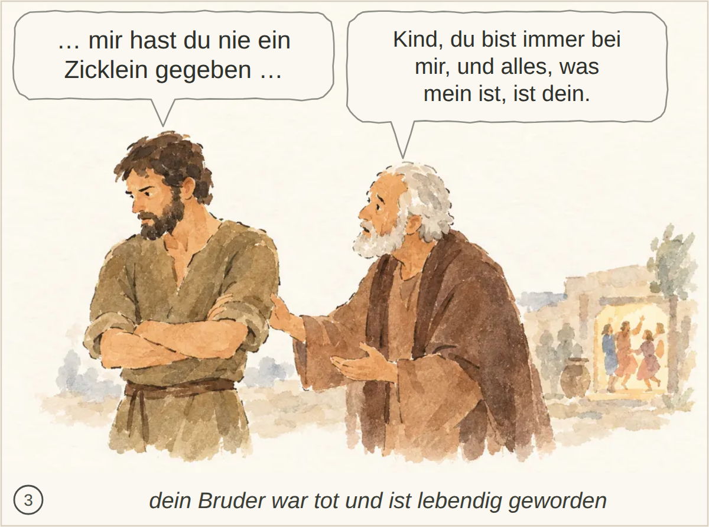
Kachel: bestanden, Kern 2 Nichts Wesentliches; die konkreten Worte sind nicht dargestellt.
abgelegtes Bild: bestanden, 4 Punkte, Kern 1 Jesu Frage nach Furcht und Glauben sowie das Staunen über den Gehorsam von Wind und See sind nicht eindeutig erkennbar.
Blind: Four men sit in a boat on calm water. The man on the left gestures toward the others, while one covers his mouth and the two on the right lean toward each other. – It may depict Jesus with his disciples in a boat, but the visible scene does not identify a particular Bible story or exact moment.
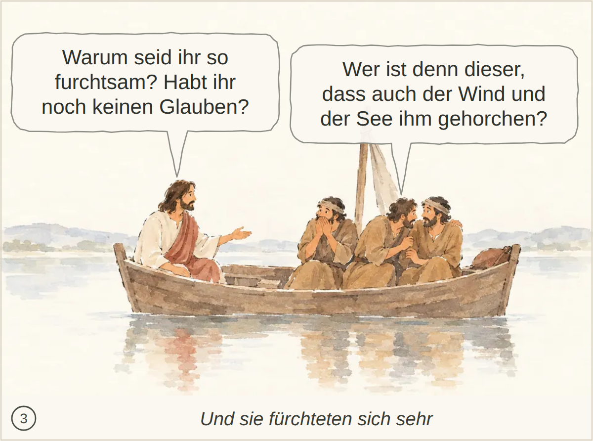
Kachel: bestanden, Kern 2 Nichts Wesentliches fehlt.
abgelegtes Bild: bestanden, 4 Punkte, Kern 1 Titus als Empfänger sowie Hoffnung auf ewiges Leben und der Wunsch nach Gnade und Frieden sind nicht erkennbar.
Blind: The seated man writes on a sheet resting on his lap. A scroll and a small lit lamp sit on the table beside him. – It could suggest Paul writing a letter, but no specific Bible story or moment can be identified from the image alone.

Kachel: bestanden, Kern 2 Die Hoffnung auf ewiges Leben sowie der Wunsch nach Gnade und Frieden werden nicht ausdrücklich erwähnt.
abgelegtes Bild: bestanden, 4 Punkte, Kern 1 Paulus als Verkündiger und der Inhalt seiner Botschaft – Gottes Verheißung des ewigen Lebens – sind nicht erkennbar.
Blind: A man holding a scroll gestures toward four people. They face him and appear to listen. – The picture may show a biblical figure teaching listeners, but no specific story or moment can be identified confidently from the visible details.
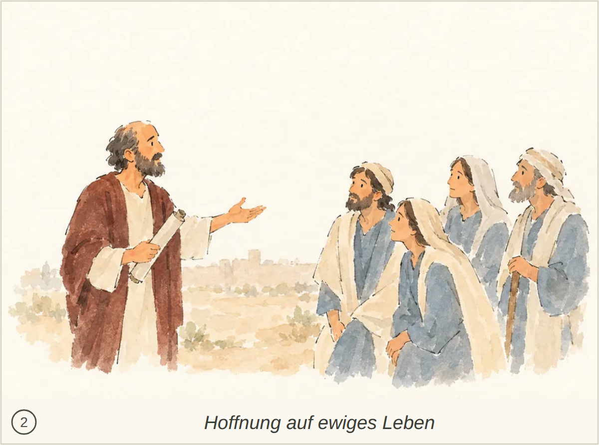
Kachel: bestanden, Kern 1 Paulus wird nicht sicher identifiziert; Gottes Verheißung und der Auftrag zur Verkündigung bleiben unklar.
abgelegtes Bild: bestanden, 5 Punkte, Kern 1 Die Einsetzung von Ältesten durch Titus auf Kreta ist nicht eindeutig erkennbar; auch Paulus’ Auftrag und sein Zurücklassen des Titus fehlen.
Blind: A man in green rests a hand on the shoulder of an older man, who bows his head and holds his hands together. Three people stand behind them and watch. – It may depict Jesus comforting or healing an older man, but the visible details do not establish a particular Bible story or moment.

Kachel: bestanden, Kern 1 Die Einsetzung eines Ältesten passt, aber Titus, Paulus und Kreta sind nicht eindeutig erkennbar.
abgelegtes Bild: bestanden, 4 Punkte, Kern 1 Die Gastfreundschaft ist erkennbar, aber die Rolle als Ältester und die Familienverhältnisse bleiben unklar; die übrigen geforderten Eigenschaften sind nicht sichtbar.
Blind: An older man offers a loaf of bread and gestures toward a traveler with a staff. Three people beside him watch and smile, while faint figures stand in the background. – The scene suggests hospitality to a traveler, but there is not enough visible evidence to identify a specific Bible story or moment confidently.
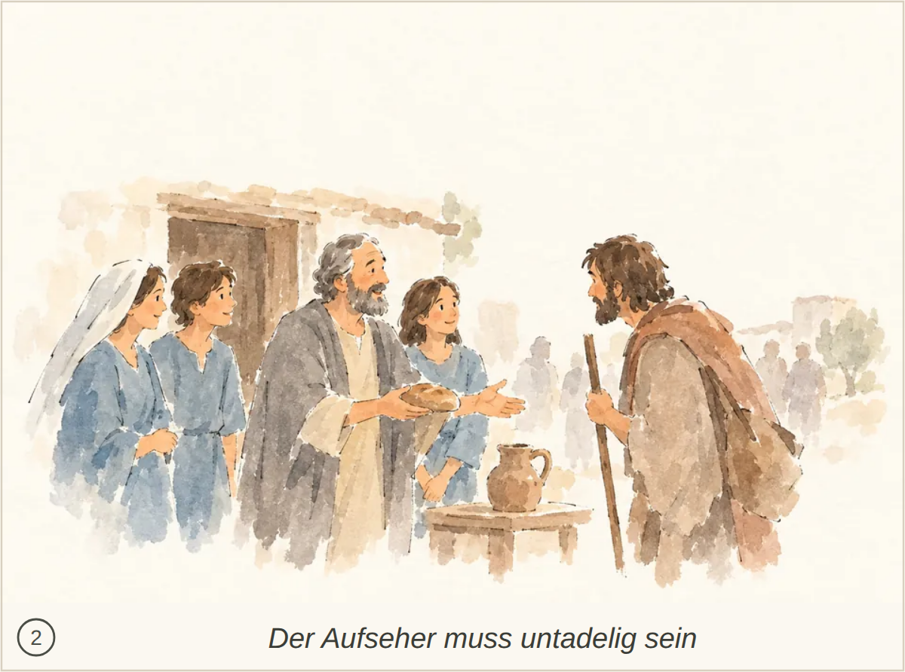
Kachel: bestanden, Kern 1 Die Gastfreundschaft ist erkennbar, aber die Personen werden nicht eindeutig als Ältester, Ehefrau und gläubige Kinder zugeordnet; die weiteren Eigenschaften des Aufsehers bleiben offen.
abgelegtes Bild: bestanden, 4 Punkte, Kern 1 Die Geldübergabe und die bedrückten Personen passen zum schändlichen Gewinn und zur Verwirrung der Familien; falsche Lehre und das Zum-Schweigen-Bringen der Verführer sind jedoch nicht erkennbar.
Blind: A man holds a small pouch out over another man's open hand while the recipient gestures. A second man watches with a scroll, while the woman and young man at left stand with folded arms and lowered heads. – The exchange could suggest Judas receiving payment for betraying Jesus, but the picture does not establish that identification or a specific Bible story.

Kachel: bestanden, Kern 1 Die Geldübergabe und die bedrückte Familie passen zur Situation; das irreführende Lehren und das Stopfen des Mundes werden nicht klar gezeigt.
abgelegtes Bild: bestanden, 3 Punkte, Kern 1 Die Geste passt zu einer Zurechtweisung, doch Paulus, Titus, das Zitat über die Kreter und der Bezug zum gesunden Glauben sind nicht erkennbar.
Blind: The man in green raises an open hand toward two men in gray-brown robes. One looks back at him while holding a scroll; the other bows his head and holds his hands together. – The scene could depict Jesus addressing other men, but no specific Bible story or moment can be identified confidently from the image alone.

Kachel: bestanden, Kern 1 Paulus und Titus sind nicht sicher erkennbar; das Zitat des kretischen Propheten und die Bestätigung seines Zeugnisses fehlen.
abgelegtes Bild: bestanden, 4 Punkte, Kern 1 Die Heuchelei der Verführer und der Gegensatz zwischen Reinheit und Befleckung werden nicht deutlich; die Figuren bleiben unbestimmt.
Blind: A standing man holds a scroll and raises one hand while looking upward. A seated man looks up at him and holds out a bowl, while distant figures walk along the path. – Possibly Jesus and a beggar, perhaps the encounter with blind Bartimaeus, but the image does not establish the figures' identities or a specific biblical moment.

Kachel: bestanden, Kern 1 Der Gegensatz zwischen Reinheit und Befleckung sowie die Verleugnung Gottes durch schlechte Werke bleiben im Bild unklar.
abgelegtes Bild: bestanden, 3 Punkte, Kern 0 Die Belehrung durch Titus und die Anleitung der verschiedenen Gruppen fehlen; stattdessen wird eine Brotausgabe vermutet.
Blind: The bearded man holds out a piece of bread toward a younger man while an older man stands beside him. Two women work with pale material in a large basin, and a boy stands nearby holding a jar. – Possibly the feeding of the multitude, with bread being prepared or distributed, but the picture does not show enough distinctive details to identify a specific Bible story or moment confidently.

Kachel: bestanden, Kern 1 Die Altersgruppen und gute Werke sind angedeutet, aber Titus’ Unterweisung, die Sklaven und die genannten Wirkungen der Lehre sind nicht erkennbar.
abgelegtes Bild: bestanden, 5 Punkte, Kern 1 Das Warten ist erkennbar, aber Gottes rettende Gnade, die Aufforderung zu einem frommen Leben und das erwartete Erscheinen Jesu Christi bleiben unklar.
Blind: A group sits around a table with food and cups, most of them looking toward the right. A standing figure shades her eyes and looks into the distance. – The picture does not contain enough distinctive evidence to identify a particular Bible story or moment. The group appears to be watching or waiting for something beyond the picture.

Kachel: bestanden, Kern 1 Das Ausschauhalten deutet das Erwarten an; Gottes rettende Gnade, die Aufforderung zum gerechten Leben und Jesu erwartetes Erscheinen bleiben jedoch unklar.
abgelegtes Bild: bestanden, 4 Punkte, Kern 1 Jesu Selbsthingabe zur Erlösung von Gesetzlosigkeit und zur Reinigung eines ihm eigenen Volkes bleibt unklar; gute Werke werden nur bildlich angedeutet.
Blind: A cloaked man bends to clasp the hand of an elderly man sitting on the ground. Nearby, a woman holds a jar, a man carries bread, and another woman sits with a child; a crucifixion is shown on the hill behind them. – The crucified man and the similarly dressed man helping someone may represent Jesus in a symbolic illustration of caring for people in need, possibly recalling Matthew 25:35–40. The image does not clearly identify a single exact narrative moment.
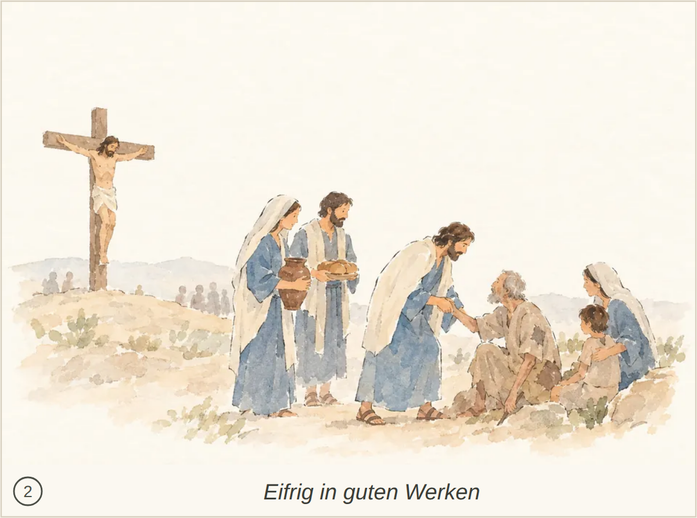
Kachel: bestanden, Kern 1 Jesu Selbsthingabe zur Erlösung von Gesetzlosigkeit und zur Reinigung eines eigenen Volkes wird nicht ausdrücklich erkennbar.
abgelegtes Bild: bestanden, 5 Punkte, Kern 1 Titus wird nicht erkannt; Ermahnung und Zurechtweisung mit Vollmacht sind nicht eindeutig dargestellt.
Blind: A bearded man gestures toward a group as if speaking to them. The people in the foreground look toward him and appear to listen. – It may depict Jesus teaching a group of followers, but no particular Bible story or exact moment can be identified from the image alone.

Kachel: bestanden, Kern 1 Die Ansprache passt zur Situation, aber Titus und seine vollmächtige Ermahnung und Zurechtweisung sind nicht erkennbar. Die Deutung verwechselt den Vers mit einer Anweisung an Timotheus.
abgelegtes Bild: bestanden, 5 Punkte, Kern 1 Hilfsbereitschaft und eine respektvolle Verbeugung sind erkennbar; Titus’ Aufforderung an die Glaubenden und die Rolle der Männer als Behörden bleiben unklar.
Blind: At the left, a dark-haired man helps an older man handle a large brown load while a woman watches. Farther right, a similarly dressed man bows toward two standing men, one of whom holds a staff. – The scene may illustrate a biblical teaching about helping those burdened, but no specific story or exact moment is identifiable with confidence.

Kachel: bestanden, Kern 1 Hilfsbereitschaft und Respekt sind erkennbar, aber Titus und seine Aufforderung an die Glaubenden werden nicht eindeutig dargestellt; auch die Behördenrolle bleibt unklar.
abgelegtes Bild: bestanden, 5 Punkte, Kern 1 Die Abweisung ist nur angedeutet; Spaltungen sowie die erste und zweite Ermahnung sind nicht erkennbar. Die Geschichte vom reichen jungen Mann ist eine abweichende Vermutung.
Blind: A man in green extends an open hand toward a man standing apart on the right. The other man faces away with his arms folded, while a group watches from behind the man in green. – Possibly Jesus watching the rich young ruler go away after being asked to give up his possessions, though the image alone does not establish the story or moment.

Kachel: bestanden, Kern 1 Die abweisende Geste könnte passen, doch Titus und der Grund der Abweisung bleiben unklar; die beiden Ermahnungen und die verursachten Spaltungen sind nicht erkennbar.
abgelegtes Bild: bestanden, 5 Punkte, Kern 1 Die Versorgung für eine Reise ist nur angedeutet; Titus, Zenas und Apollos sowie der Bezug zu guten Werken sind nicht erkennbar.
Blind: Several people stand together on a shore, facing one another. The green-robed man holds a loaf as the blue-robed man reaches toward it, while the others carry or gesture toward supplies. – Possibly the feeding of the five thousand, with bread being brought or distributed, but the picture does not establish the story or the precise moment.

Kachel: bestanden, Kern 1 Die Reisevorbereitung für Zenas und Apollos durch Titus sowie die Aufforderung zu guten Werken sind nicht eindeutig erkennbar.

Kachel: bestanden, Kern 1 Der Ältere weist auf eine Schriftrolle, doch seine Ermahnung durch gesunde Lehre und die Zurechtweisung eines Widersprechenden bleiben unklar.

Kachel: bestanden, Kern 1 Die Waschung und die Umarmung passen zum Motiv, doch Gottes Erbarmen, die Erneuerung durch den Heiligen Geist und die Hoffnung auf ewiges Leben bleiben unklar.

Kachel: bestanden, Kern 1 Titus und seine Aufforderung zu guten Werken bleiben unklar; auch das Meiden nutzloser Streitfragen wird nicht eindeutig erkennbar.

Kachel: bestanden, Kern 1 Die Ausrüstung von Zenas und Apollos sowie die Aufforderung zu guten Werken fehlen; die Identität des Vorlesenden bleibt unklar.